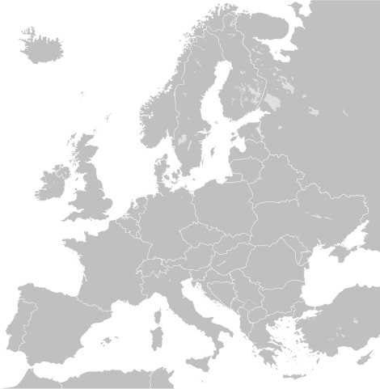

Historia Formuły 1
Formuła 1 (F1) to najwyższa klasa wyścigów samochodowych, której historia jest pełna pasji, innowacji technologicznych i niezatartego śladu w kulturze motoryzacyjnej.
Początki Formuły 1
Korzenie F1 sięgają lat 20. i 30. XX wieku, kiedy to w Europie organizowano pierwsze wyścigi Grand Prix. Oficjalnie Formuła 1 jako seria wyścigów o Mistrzostwo Świata została zainaugurowana w 1950 roku przez Międzynarodową Federację Samochodową (FIA). Pierwszy wyścig odbył się 13 maja 1950 roku na torze Silverstone w Wielkiej Brytanii, gdzie Giuseppe Farina, prowadząc samochód Alfa Romeo, zdobył pierwsze pole startowe.
Wczesne lata i dominacja Alfa Romeo
W początkowych latach F1 dominowały zespoły takie jak Alfa Romeo, Ferrari i Maserati. Giuseppe Farina, pierwszy mistrz świata, jeździł dla Alfa Romeo. Kolejną legendą był Juan Manuel Fangio, który zdobył pięć tytułów mistrza świata w latach 1951, 1954, 1955, 1956 i 1957, reprezentując różne zespoły, w tym Alfa Romeo, Maserati, Mercedes-Benz i Ferrari.
Złota era Formuły 1
Lata 60. i 70. XX wieku to okres znany jako "złota era" F1. Brytyjskie zespoły, takie jak Lotus, McLaren i Williams, zaczęły dominować na torach. Lotus, pod przewodnictwem Colina Chapmana, wprowadził innowacje techniczne, takie jak monocoque – jednolitą konstrukcję nadwozia – oraz aerodynamiczne skrzydła zwiększające docisk i stabilność pojazdów. Jim Clark, kierowca Lotusa, zdobył dwa tytuły mistrza świata w 1963 i 1965 roku. Niestety, liczne tragiczne wypadki, w tym śmierć Jima Clarka w 1968 roku i Joachena Rindta w 1970 roku, skłoniły FIA do wprowadzenia surowszych przepisów dotyczących bezpieczeństwa, takich jak obowiązkowe pasy bezpieczeństwa, lepsze kaski i wzmocnione konstrukcje samochodów.
Era turbo i dominacja McLarena
Lata 80. XX wieku przyniosły rewolucję technologiczną w postaci silników turbo, które znacznie zwiększyły moc pojazdów. Renault jako pierwszy zespół wprowadził silniki turbo w 1977 roku, jednak to McLaren i Ferrari zdominowały tę erę. McLaren, z kierowcami takimi jak Alain Prost i Ayrton Senna, zdobył cztery tytuły mistrza świata konstruktorów z rzędu w latach 1988–1991. Rywalizacja między Prostem a Senną, którzy byli zarówno kolegami z zespołu, jak i zaciekłymi rywalami, stała się jedną z najbardziej pamiętnych w historii sportu.
Era hybrydowa i dominacja Mercedesa
W 2014 roku Formuła 1 wkroczyła w nową erę technologiczną z wprowadzeniem silników hybrydowych. Zespoły zaczęły korzystać z zaawansowanych jednostek napędowych, łączących tradycyjne silniki spalinowe z technologią elektryczną, co zwiększyło osiągi i poprawiło efektywność paliwową. Zespół Mercedes stał się dominującą siłą w tej erze, zdobywając tytuły mistrza konstruktorów w każdym sezonie od 2014 roku. Lewis Hamilton, główny kierowca Mercedesa, zdobył liczne tytuły mistrza świata, bijąc wiele rekordów, w tym rekordy liczby zwycięstw i pole positions.
Nowe przepisy i przyszłość Formuły 1
W ostatnich latach FIA wprowadziła nowe przepisy mające na celu zwiększenie konkurencyjności i bezpieczeństwa w Formule 1. W 2022 roku wprowadzono nowe regulacje techniczne, które miały na celu zmniejszenie różnic między zespołami i zwiększenie liczby wyprzedzeń na torze. Formuła 1 stawia również coraz większy nacisk na zrównoważony rozwój, z planami wprowadzenia paliw ekologicznych i zmniejszenia emisji CO₂. Formuła 1 pozostaje jednym z najbardziej ekscytujących i prestiżowych sportów na świecie, nieustannie ewoluując i przyciągając miliony fanów na całym globie.
Współczesne ściganie
Ostatnie sezony Formuły 1
W latach 2010–2025 Formuła 1 była świadkiem dynamicznych zmian i emocjonujących rywalizacji. Sebastian Vettel zdobył cztery kolejne tytuły mistrza świata w latach 2010–2013, prowadząc zespół Red Bull Racing do dominacji. Następnie, w latach 2014–2020, Lewis Hamilton z zespołem Mercedes-AMG Petronas zdominował stawkę, zdobywając siedem tytułów mistrza świata. W 2021 roku Max Verstappen rozpoczął swoją dominację, zdobywając cztery kolejne tytuły mistrza świata w latach 2021–2024 z zespołem Red Bull Racing. W 2024 roku McLaren zdobył tytuł mistrza konstruktorów po 26-letniej przerwie, co stanowiło istotny punkt zwrotny w historii zespołu.
Poniżej przedstawiamy tabelę z ostatnimi 10 mistrzami świata Formuły 1:
| Sezon | Kierowca | Zespół |
|---|---|---|
| 2024 | Max Verstappen | Red Bull Racing |
| 2023 | Max Verstappen | Red Bull Racing |
| 2022 | Max Verstappen | Red Bull Racing |
| 2021 | Max Verstappen | Red Bull Racing |
| 2020 | Lewis Hamilton | Mercedes |
| 2019 | Lewis Hamilton | Mercedes |
| 2018 | Lewis Hamilton | Mercedes |
| 2017 | Lewis Hamilton | Mercedes |
| 2016 | Nico Rosberg | Mercedes |
| 2015 | Lewis Hamilton | Mercedes |
Dominacja Maxa Verstappena
Max Verstappen, holenderski kierowca wyścigowy, zdominował świat Formuły 1 w ostatnich latach. Swoją przygodę z F1 rozpoczął w wieku 17 lat, stając się najmłodszym kierowcą w historii tego sportu. Jego talent i determinacja szybko zaowocowały sukcesami, a lata 2021–2024 przyniosły mu cztery kolejne tytuły mistrza świata. W 2021 roku, po zaciętej rywalizacji z Lewisem Hamiltonem, Verstappen zdobył swój pierwszy tytuł mistrza świata. Kolejne sezony umocniły jego pozycję jako jednego z najwybitniejszych kierowców w historii F1. W 2024 roku, zapewniając sobie tytuł podczas Grand Prix Las Vegas, dołączył do elitarnego grona kierowców z czterema tytułami mistrza świata, obok takich legend jak Sebastian Vettel i Alain Prost. Obecnie, z czterema tytułami na koncie, Verstappen plasuje się wśród najbardziej utytułowanych kierowców w historii F1, ustępując jedynie Michaelowi Schumacherowi i Lewisowi Hamiltonowi (obaj po siedem tytułów) oraz Juanowi Manuelowi Fangio (pięć tytułów).
Poniżej przedstawiamy postęp Maxa Verstappena w zdobyciu największej liczby tytułów Mistrza Świata Formuły 1:
Grand Prix w Europie
Formuła 1 to nie tylko sport, ale również niesamowita podróż po legendarnych torach wyścigowych Europy. Od malowniczej Hiszpanii po deszczową Wielką Brytanię — każdy kraj oferuje unikalne wyzwania i emocje dla kierowców oraz kibiców. Oto mapa najważniejszych europejskich Grand Prix:
Najedź kursorem na kraj, aby zobaczyć jego nazwę. Kliknij, aby dowiedzieć się więcej o Grand Prix.
